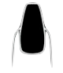
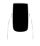
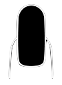
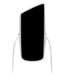
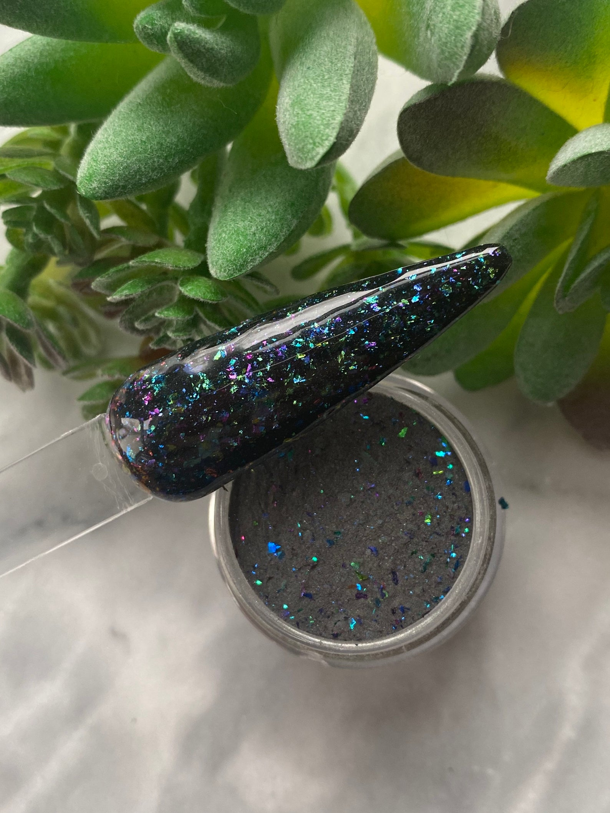
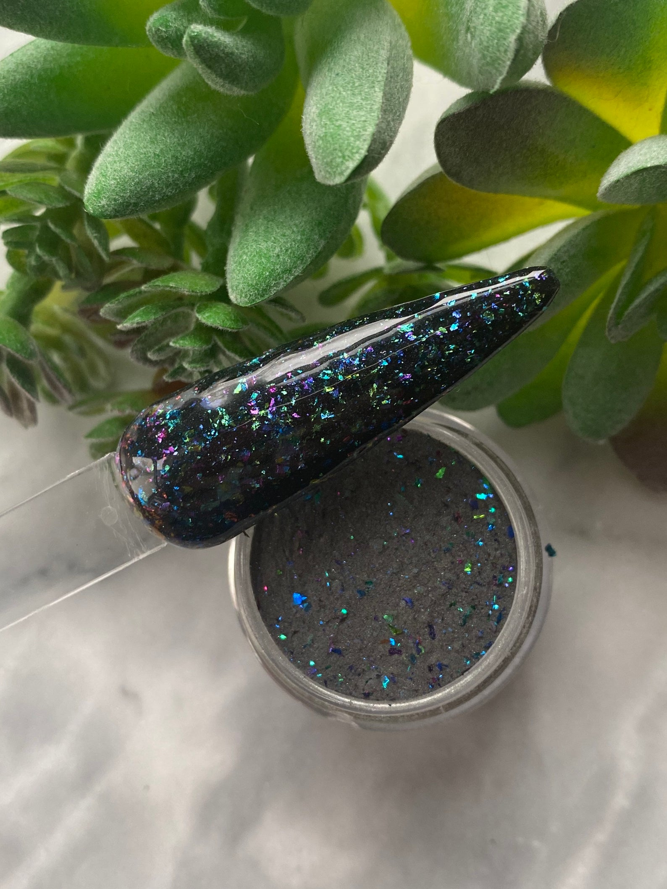

Stiletto nails are another popular nail shape, especially among the younger crowd. The longer they are the better they look, adding a bit of an edge to the style of the wearer.
When people say press-ons, the first thing that comes to mind are the cheap plastic nails that can be found at Target, Wal-Mart, or Sally's Beauty Supply.
Here, we're talking about Luxury Press-Ons. Over the last few years, press-ons have started making a come-back due to their convenience and ability to be dressed up or down, and it's becoming harder and harder
to tell which sets have been done at home and which were done in a salon. Press-on nails have even been seen at celebrity events worn by Cardi B,
Rihanna, Billie Eilish, and more.
There are many benefits to wearing press-ons, but some of the main ones include:
Whether you're just getting into the nail scene or been wearing them for years, press-on nails are definitely worth a try. They're perfect for a weekend event or, with proper care and maintance, can easily last three (3) to four (4) weeks. You can still find press-ons at your local beauty supply store, with much nicer finishings than back in the 90s and early 2000s, but a new practice is to buy them from people online who make both custom and pre-made sets. They can be found in places like Amazon, Etsy, and even Instagram. Even more common, you can buy kits from Amazon and DIY them, as well.
Any shape or size you can get at the salon, you can find in press-ons. Whether you need them short for the week but want them long for the weekend, you can mix and match with ease.
You can cut them down to make them extra small, you can glue them together to make them extra long, and you can wear them all sizes in between. The possibilities are endless.
Common nail shapes include:

Stiletto nails are another popular nail shape, especially among the younger crowd. The longer they are the better they look, adding a bit of an edge to the style of the wearer.
Almond nails are for those who want a more natural looking nail shape. They help to elongate the nail while still having a feminine, classy feel to them, making them perfect for any occasion.

Square nails have probably been around the longest, flat on top with a straight edge and pointed sides. Great for the workplace, any style pairs well with this classic, low maitenance look.
It should be noted that these nails are a bit wide, which is great for designs, but will add some width to the appearance of the fingers.

Oval nails are similiar to square, except that they round at the end which can help to elongate wider fingers. Some people tend to mix square and oval nails, making them squoval, to get the best of both worlds.

Lipstick nails are among the newest nail trend, looking exactly like they sound. They are similiar to coffin or square nails, except the edge is cut diagonally instead of across. This shape is of the most dramatic, and while it may
not be the best for the workplace, it certainly adds flare to any style.
The best shape for you is the one you feel most comfortable with because when you feel good you look good, but whatever you choose, you can't go wrong.
Press-ons can be decorated as much or as little as you like. Whether you're a stickler for regular or gel nail polish, acrylic, or dip powder, you can continue to get your nails styled however you like, often at salon quality or better. If you like them sweet and simple or loaded with gems, stickers, decals, or hand painted designs, press-ons can handle them all. Here are some examples of all the different base types:
 

Press-On Nail businesses have been popping up at an alarming rate, and you can browse a variety of designs, or even submit your own to be custom made. Whichever you choose, someone will be making and shipping your nails right to you, and maybe you don't want to wait. Whether you want them now, or maybe you just want to express your own creativity, you can make your own press-on nails, skipping the middle man altogether. Now you'll save time AND money; win-win!
Here's what you'll need to get started:
Once you have all your gathered materials, follow these directions and you'll be ready to show off your new manicure in no time!
Removing your press on nails is just as easy. As mentioned before, if you decide to use nail tabs, you can simply place your finger under the false nail and pop them off. They will come off with very little force and you can resuse them later if you want. If you decided to use nail glue, it will require a bit more effort. There are two methods you can use, one which will allow you to save your press-ons, and one that won't.